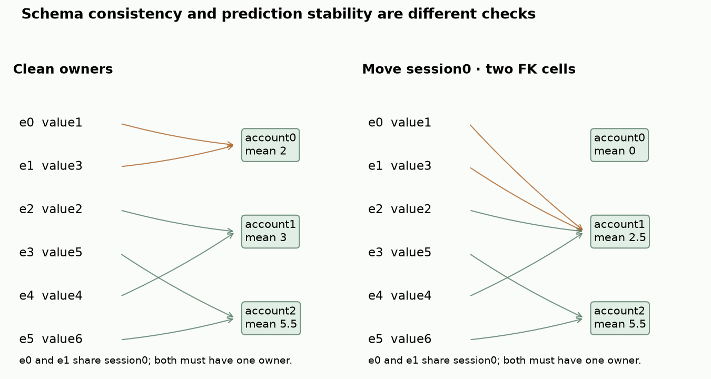
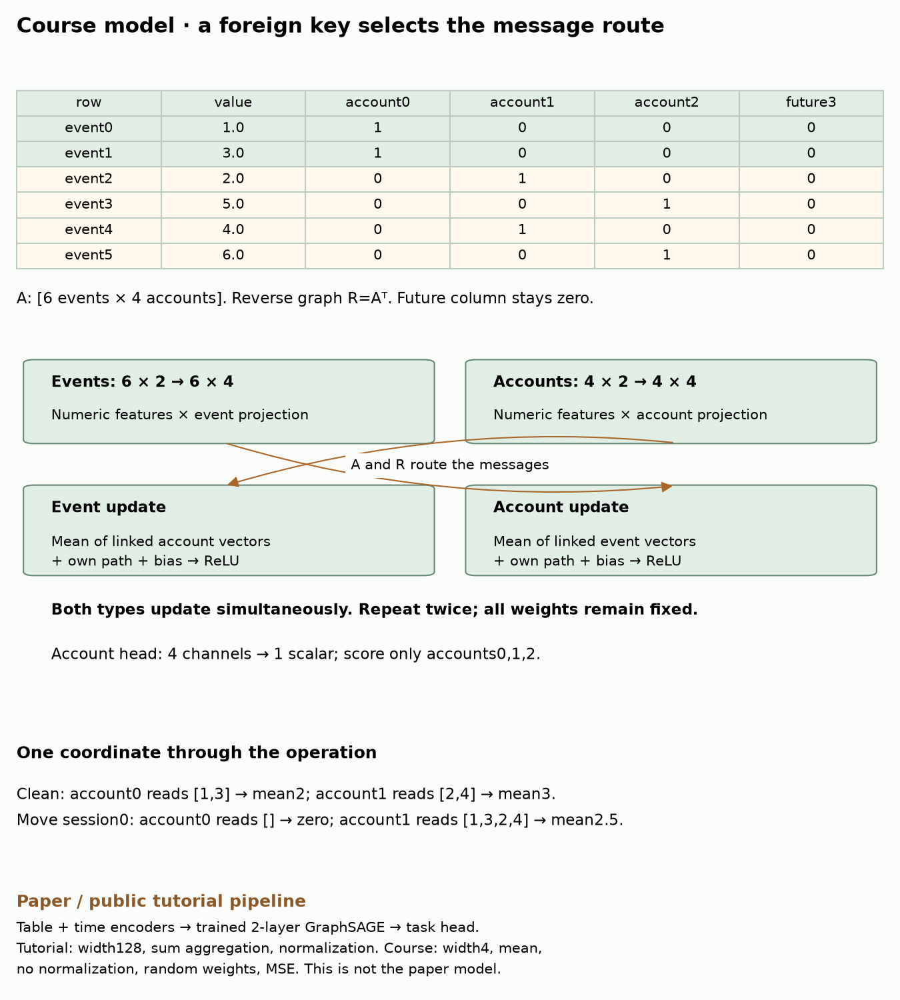
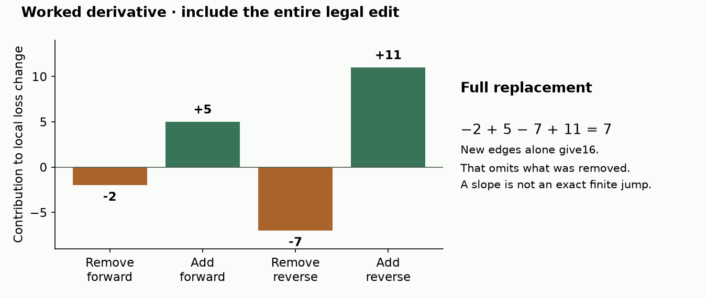
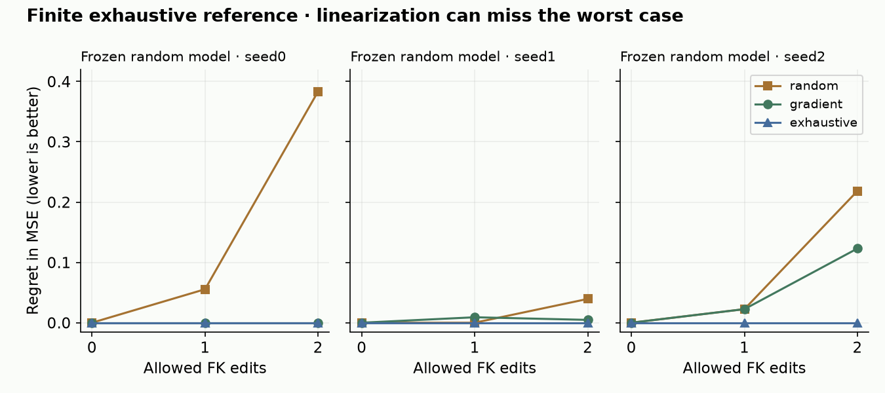

B21 · Valid links, vulnerable predictions¶
Research bridge · Elective ◆ · One win: define and test a legal relational perturbation
B20 changed training order while holding exposure and optimization fixed. Now freeze the model and change its database links. The mission asks whether relational structure supplies useful information. That also creates a responsibility: test how predictions depend on that information being correct.
Student notebook · Executed solution · Download solution · Printable reference · Reproduction contract
1 · A valid value can still be the wrong value¶
A primary key (PK) identifies a row uniquely. A foreign key (FK) stores the primary key of a related row. Referential integrity means every non-null FK refers to an existing permitted parent. Our example permits no nulls. An event's owner can reference a real account and still identify the wrong account.
A functional dependency, written session → owner, means that any two events with the same session must have the same owner. Checking each FK against the account table does not check this cross-row rule. Temporal eligibility is another condition: our course permits a parent only if it existed when the event occurred. This stronger event-time rule is part of our declared threat model.
Worked prerequisite. Events0 and1 belong to session0. Their owners are both account0. Changing event0's owner to account1 preserves FK existence but breaks session → owner. Changing both owners to account1 preserves both conditions. If account1 did not yet exist, the change would still fail the time rule. Recall the availability boundary from B19b; the precise event-time rule here is a separate declared constraint.
In plain terms. “The database accepts this ID” is weaker than “this edit obeys every rule of the experiment,” and both are weaker than “the prediction stays good.”
2 · Write the threat model before choosing the attack¶
A threat model says what the attacker knows, what they may change, and what counts as damage. Our white-box evaluator knows the fixed model weights, features and query answers. It may edit owner FKs; it may not edit features, answers, row IDs, session IDs or timestamps. The query cutoff is10. Parent account3 arrives at12 and cannot be used.
An evasion attack changes the input to a frozen model. A poisoning attack changes data used to train a model. This lesson studies evasion only. Knowing the answers makes this a strong supervised stress test. It is not a claim that a deployed attacker necessarily has those answers.
Budget unit. One edit means one changed database FK cell. A graph often stores both child→parent and parent→child edges. Replacing one FK removes two directed edges and inserts two directed edges, but still costs one database edit. Moving the two-row session costs two edits. Count the final changed cells once; do not count API calls or repeated rewrites.
Predict which rule will reject this edit
- owners:0,0,1,2,1,2
- owners:1,1,1,2,1,2
Clean account means:2,3,5.5. Edited means:0,2.5,5.5. These are aggregation values, not final predictions.
Try it. Move session0 to account1 with budget1, then budget2. Next move only event0. Finally choose the future account. Before each reveal, predict which constraint rejects the proposal. Features and event values never change.


3 · Model architecture: how a link changes a prediction¶
A heterogeneous graph has different node and edge types. Here the types are events and accounts. Message passing makes a node read vectors from its neighbors. GraphSAGE combines a node's own vector with an aggregate of those neighbor vectors. Two rounds let information travel along two edges. The paper's model is a heterogeneous GraphSAGE model; its public tutorial includes tabular and temporal encoders before graph propagation.
Follow the computation
A structural edit changes who supplies a message
- 1
Construct the declared graph
Keep node features and target split fixed for the structural intervention.
- 2
Encode node rows
The course GraphSAGE-style model produces hidden node features.
- 3
Aggregate in both directions
Each layer combines the root with transformed neighbor information.
- 4
Compare matched predictions
Changing one edge changes a message route; the experiment must say what else is held fixed.
Open the decisive operation
Does deleting an edge necessarily delete the destination’s own contribution?
No. The root branch remains. The intervention removes or changes a neighbor contribution and its normalization.
Trace answer: No. The root branch remains. The intervention removes or changes a neighbor contribution and its normalization.
Course bidirectional GraphSAGE-style model; paper/tutorial differences remain documented.


Course inputs. Events carry two numeric features, beginning with values1,3,2,5,4,6. Accounts carry two fixed numeric features. Separate2×4 projection matrices map each type into four channels. Our four-channel vectors are learned-model-shaped representations, but their weights are randomly initialized and frozen: there is no course training.
One round. Let A be a6×4 matrix whose entry A[i,j] is1 when event i belongs to account j and0 otherwise. Let R=Aᵀ be the4×6 reverse matrix; the superscript means transpose, swapping rows and columns. An account reads the mean of its linked event vectors. An event reads its linked account vector. Each type adds its own transformed vector, its transformed neighbor mean and a bias, then applies ReLU, which replaces negative coordinates with zero. Both types update simultaneously from the previous round.
Worked aggregation. Account0 initially reads values1 and3, so their mean is2. Account1 reads2 and4, mean3. Move session0's two events to account1: account0 has no neighbors, defined to contribute a zero vector; account1 now reads1,3,2,4, mean2.5. This is one displayed feature coordinate, not the network's final prediction.
Output. Repeat message passing twice. A linear head maps each account's four-vector to a scalar prediction. Score only query accounts0,1,2. Account3's features cannot influence them through any legal graph. A test changes those future features by a huge amount and requires unchanged eligible predictions.
Scope check. The course uses width4, mean aggregation, no layer normalization, fixed random weights and squared loss. The source tutorial uses width128, sum aggregation and trained weights for the selected regression task. The diagram labels these differences. Our evidence concerns finite model sensitivity, not the paper's accuracy or learned relational generalization.
4 · Score the whole replacement, not just the new edge¶
The loss measures disagreement with known answers. Our mean squared error (MSE) averages (prediction−answer)² over the three queries. Larger means more damage in this experiment. The paper's selected target uses mean absolute error (MAE), which averages absolute differences instead. These are different units and objectives.
A gradient measures the local rate of change of loss with an input. Integer IDs have no useful ordinary gradient. Introduce continuous edge weights, then differentiate the graph calculation with respect to them. An existing edge starts at1 and a candidate edge starts at0. Our weighted mean divides by the sum of incoming weights, with an explicit zero-neighborhood rule. These fractional weights are a scoring device, not database edits.
Worked direction. Suppose a child's old forward-edge gradient is2 and the new gradient is5. The reverse-edge gradients are7 and11. Removing the old edges contributes−2−7. Adding the new edges contributes5+11. The predicted first-order loss change is7. Looking only at the new edges gives16 and ranks the wrong quantity.
For a proposed adjacency change Δ=A_new−A_old, the full linear score is the sum of G_forward×Δ plus G_reverse×Δᵀ over all entries. Here G denotes a matrix of gradients and × means entrywise multiplication before summing. A coupled edit adds the contributions of every changed row. The public source also subtracts old-edge gradients; read the actual implementation alongside the paper's candidate-score notation. Source


Local is not exact. ReLU boundaries, changing neighbor means, and two-round propagation make loss nonlinear. A large local slope need not identify the most damaging discrete edit. We verify30 admissible directions by a small positive finite difference: nudge along the direction, measure the loss change, divide by the nudge size, and compare with the gradient. Passing that check verifies local derivatives, not the attack's global optimality.
5 · Enumerate the finite experiment completely¶
Held fixed: database features and answers, admissible destinations, model weights within each seed, budget definition and loss. Varied: edit selection method and allowed FK-cell budget. Measured: actual changed cells, all query predictions, attacked MSE and regret. Regret is the exhaustive worst-case loss minus the method's achieved loss; zero means the method found a worst case in this finite universe.
There are three seeds0/1/2, budgets0/1/2, and three methods. That gives27 comparison conditions and81 reported query predictions. Five sessions each have two alternative legal parents:10 atomic session/destination edits. The two-row session costs2; the four other sessions cost1. Within budget2, count the clean state,8 single-row changes,2 coupled changes and24 two-single-row combinations:35 states. With three models, score105 model/state pairs, or315 output coordinates, before selecting results.
| Method | Selection rule | What the result establishes |
|---|---|---|
| Random | One uniform draw from states using exactly the budget | One paired random baseline draw, not its expectation |
| Gradient | Maximize linear gain over all legal states within the budget | Best local linearized choice in this small universe |
| Exhaustive | Maximize actual loss over all legal states within the budget, including clean | Exact worst case for this finite model and threat set |
Ties favor fewer changed cells, then lexicographic owner assignments. Clean is available to both optimizers, so they need not spend the full allowance. Our gradient selection enumerates feasible directions to isolate linearization error. The paper uses sampled candidates and selection heuristics, which introduce additional search limitations.


| Seed | Budget | Random MSE | Gradient MSE | Exhaustive MSE | Exhaustive edits used |
|---|---|---|---|---|---|
| 0 | 0 | 3.629972 | 3.629972 | 3.629972 | 0 |
| 0 | 1 | 3.589556 | 3.645049 | 3.645049 | 1 |
| 0 | 2 | 3.662597 | 4.046013 | 4.046013 | 2 |
| 1 | 0 | 3.671067 | 3.671067 | 3.671067 | 0 |
| 1 | 1 | 3.685567 | 3.676531 | 3.685567 | 1 |
| 1 | 2 | 3.646104 | 3.680894 | 3.685567 | 1 |
| 2 | 0 | 3.709689 | 3.709689 | 3.709689 | 0 |
| 2 | 1 | 3.709689 | 3.709689 | 3.732193 | 1 |
| 2 | 2 | 3.666667 | 3.762107 | 3.885177 | 2 |
Read the result. At budget2, the gradient choice matches exhaustive search for seed0 but misses it for seeds1 and2. Seed1's exact worst case uses only one changed FK cell. More permitted edits cannot lower the exhaustive maximum, because the smaller feasible set remains included. A heuristic forced to use more edits can improve or worsen the attack. Do not infer that random never works or that gradients always win from three random-network seeds.
The independent audit uses a separate NumPy forward and enumerates the six individual FK cells instead of the five session choices. It checks every legal state, prediction, loss and method selection. Its output agrees exactly with the saved course prediction coordinates in this runtime. Eight deliberately corrupted reports are rejected. Numerical evidence · Independent audit
6 · Full reproduction starts with preserving the clean model¶
Our named historical target is the entire qualifying-position block of Table4 in Structural Adversarial Attacks on Relational Deep Learning under Integrity Constraints. It needs seven methods, five budgets1/25/50/75/100 and five seeds39–43:175 seed conditions. The published training setting has18epochs, two layers, width128, batch512,128neighbors per hop and100candidate samples per source. Appendix
What is available. The pinned author repository provides model/trainer/attack code and a notebook with saved output. We authenticate those bytes and extract all35 selected paper mean/std cells and all35 saved tutorial result rows. The tutorial has one epoch, one seed and budgets1/125/250/375/500. Its current seed loop cannot run as written, so saved outputs are historical notebook contents, not proof that the present cells execute.
Clean-equivalence test. Before any attack, the ordinary model and its differentiable wrapper should agree on the same graph. Our current-runtime probe finds four newly introduced root-bias tensors not filled by the permissive weight copy. Maximum embedding differences across three small fixtures are1.422336,0.712215 and1.648367. Zeroing only those biases makes the embeddings match exactly on all three fixtures. That controlled repair isolates this local conversion issue; it does not authenticate the authors' original environment or establish full benchmark equivalence.
Constraint test. The released candidate sampler admits future parents on our supplied fixture and does not enforce our coupled-session dependency. Its edit function can produce a graph dictionary that differs from the underlying relation stores. The attackable model reads that dictionary, so the edit is not a no-op; the problem is that database/graph consistency has not been demonstrated. These are bounded tests of released components, not claims that every original experiment violated its rules. Executed source probes
Scope check. Selected historical reproduction is INCOMPLETE_SOURCE_PROTOCOL_GATE / NOT_RUN. Original checkpoints, exact batches, candidate draws, data identities and dependency versions have not been authenticated. Paper cells and tutorial results use different protocols and are INCOMPARABLE. We preserve the complete public source, an executable audit and a command that refuses historical training until the gates are resolved. No epochs or seeds are silently reduced to manufacture a reproduction.
Why this matters. Without clean equivalence, an apparent attack effect could include a changed predictor. Without valid database reconstruction, a graph perturbation may not represent any legal database edit. Without identical historical inputs, numerical proximity cannot establish reproduction. Full contract and commands
7 · Build the checks yourself¶
The standalone notebook has three live functions:
changed_cells: count final FK cells that differ, including every member of a coupled edit.validate_assignment: enforce existing integer parent IDs, session consistency, availability and budget.direction_score: include old-edge removal and new-edge insertion in both directions.
Each CHECK rejects a plausible wrong answer. Your functions feed a complete fresh finite rerun and comparison with saved evidence. The full small model and independent oracle are visible in the notebook. The paper lane separately authenticates the archived source and saved output. No repository checkout is required for either default lane.
Counterfactual exercise. If the attacker does not know query answers, which selection rules would become unavailable? If you allow only one-row edits, what happens to session0's feasible moves? Change one assumption at a time and report the newly defined universe rather than treating it as the original experiment.
Exit defense. Explain why FK validity is insufficient, why a two-row move costs two, why clean-equivalence is necessary, and why a failed attack does not prove a formal robustness guarantee. Exhaustive search gives a guarantee only over this explicitly finite set for these fixed models. It says nothing about other data, other edits or privacy. Near-random privacy-attack success would not prove differential privacy either; that is the alternative B21 route, not an outcome measured here.
Ask the agent a follow-up question or paste your explanation for feedback. Revisit the legal-edit trace tomorrow, the gradient calculation in one week, and the threat-model defense in one month. Author tests do not establish learner mastery.
Next: B22 asks whether an intervention on a newer model mechanism supports the claim made about it. Carry forward the same habit: freeze the boundary, alter one thing, and measure the consequence.